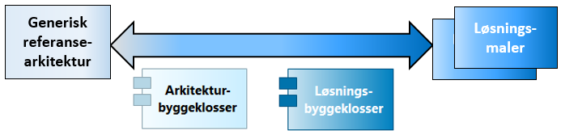
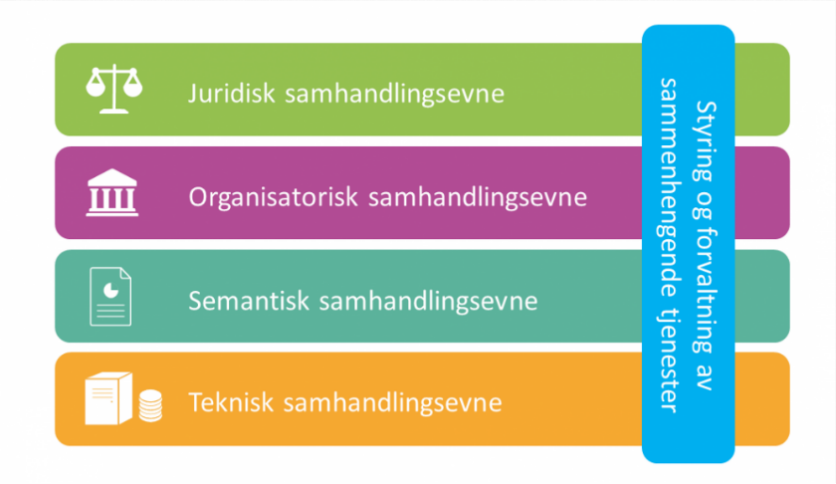
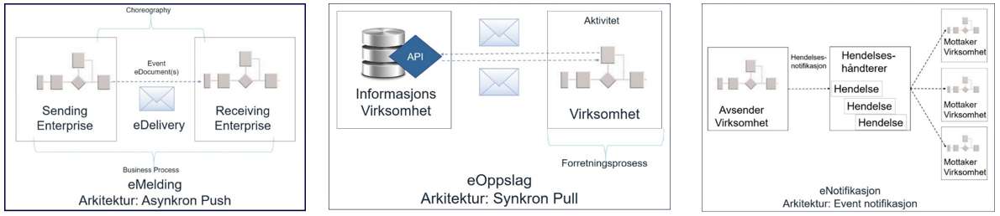

Hva kom først, referansearkitekturen eller løsningen?
Du er i godt selskap om du er usikker på hva som er riktig svar på dette spørsmålet. I dette innlegget vil jeg gi noen hint og fortelle om hva referansearkitekturer er, hvem det er for, hvor vi står, og hvor vi går i utviklingen av denne formen for veiledning i Norge. Mange ser nytteverdien og ønsker seg felles referansearkitekturer. Det handler om å bygge gode digitale løsninger.
Hva er en referansearkitektur, egentlig?
Hus kan være skreddersydd, modulbasert eller masseprodusert, men er koplet til samme ledningsnett. Ingen byer er like, men de fleste byer er bygd ut fra samme krav til innbyggertjenester. Mellom byene finnes en felles transportinfrastruktur som gjør at vi kan reise, og vi har et digitalt internett som gjør at vi kan møtes uten å reise.
Dagens hus, byer og infrastrukturer er kompliserte, og mange fagdisipliner må inn og gjøre sin del av jobben når noe skal bygges. Det må finnes rom for å tenke nytt, men det må også finnes byggeforskrifter som sikrer at husene ikke raser sammen. Vi har heller ikke råd til å tenke nytt hver gang. Både snekkere og arkitekter bygger med byggeklosser, ut fra mer eller mindre faste oppskrifter.
Der jeg jobber, bygger vi ikke fysiske hus eller byer, men digitale løsninger, og jeg kaller oppskriftene for referansearkitekturer.
Som med forskjellen på arkitektur for hus og byer, kan referansearkitekturer være avgrenset til mindre eller større områder. F.eks. kan meldingsutveksling i offentlig sektor sies å være et mindre område, mens f.eks. smarte byer er et større område der meldingsutveksling bare er en del av bildet.
Digitale byggeklosser kan være generiske arkitekturbyggeklosser (f.eks. regnearkprogram) eller spesifikke løsningsbyggeklosser (f.eks. Excel). Referansearkitekturer forteller om hvordan byggeklossene settes sammen, i spennet fra generiske til løsningsspesifikke referansearkitekturer - avhengig av interessenter og formål.

Hvem er referansearkitekturer for?
En og samme referansearkitektur kan ha flere interessenter – det kommer an på hvordan en velger å gjøre avgrensingen av området.
Beskrivelsene bør uansett være utformet for å treffe aktuelle målgrupper og etablere felles vokabular blant dem som behøver å kunne kommunisere og forstå hverandre. Formålet med et felles vokabular er ikke å finne det ene rette begrepet, men å sikre felles forståelse for de begrepene man benytter.
Det behøves også ulike perspektiver og framstillinger for ulike målgrupper.
Som arkitekt, ønsker jeg meg modeller med presise og konsistente beskrivelser av hvordan byggeklossene henger sammen. Er du jurist, må du kanskje forstå noen av de tekniske spesifikasjonene for å utforme avtaler. Er du beslutningstaker, holder det kanskje å kjenne til bruksområde, kostnader og strategiske føringer.
I sum blir alle roller og sammenhenger viktige, på tvers av juridiske, organisatoriske, semantiske, tekniske og styringsmessige aspekter. Gode referansearkitekturer får dette til å henge sammen. Mer om disse aspektene finner du under Rammeverk for digital samhandling, der følgende figur er sentral:

Hva er formålet med referansearkitekturer?
Neste gang noen spør deg om dette, foreslår jeg at du teller det på tre fingre:
-
Gjenbruk
-
Samhandlingsevne
-
Innovasjon
Gjenbruk av god praksis er som regel en god ide, og referansearkitekturer kan fortelle om arkitekturer som har vist seg å være gode. Samhandlingsevne forutsetter at byggeklossene passer sammen, og referansearkitekturer spesifiserer byggeklossene slik at de passer. Innovasjon skjer best i samspill mellom flere aktører, og referansearkitekturer kan gi felles språk og rammer for å tenke nytt.
Når skal du gjenbruke og når skal du tenker nytt? Om det gis for strenge krav til å følge løsningsspesifikke referansearkitekturer, kan det fungere som stoppere for innovasjon. Ofte finnes flere mulige løsninger. Overordnede referansearkitekturer bør gi veiledning til valg mellom alternativer framfor harde føringer til valg av bestemte løsninger.
I økosystemet for digital samhandling og tjenesteutvikling fungerer referansearkitekturer som rammer for innovasjon. Ulike aktører kan utvikle digitale tjenester og løsningsbyggeklosser som passer inn, etter mønster av generiske arkitekturbyggeklosser som passer sammen.
Jeg ønsker meg også at aktørene i økosystemene bidrar i arbeidet med referansearkitekturer. Smidig utvikling av nye arkitekturer må skje i sammenheng med smidig utvikling av løsninger. På nye områder, kan gode eksempler være det beste vi har.
Hvor står vi?
KS og regjeringens digitaliseringsstrategi - Én digital offentlig sektor - har som mål at offentlige tjenester skal oppleves sammenhengende og helhetlige av brukerne, uavhengig av hvilke virksomheter som tilbyr dem. Dette stiller krav til samhandling på tvers av virksomheter og sektorer, samt på tvers av fagdisipliner.
En forutsetning for all samhandling er evnen til å utveksle informasjon. Da Digdir startet arbeidet med nasjonale referansearkitekturer, ble det definert følgende tre hovedmønstre:

Det finnes nå en samlet nasjonal referansearkitektur for datautveksling, der disse mønstrene inngår. Gjennom intervjuer og spørreundersøkelser i 2020, har vi fått gode tilbakemeldinger med tanke på nytteverdien, men det er samtidig sterkt ønsket at vi fortsetter arbeidet.
Hvor går vi?
Vi må arbeide videre i takt med utviklingen rundt oss.
F.eks. er eMelding som referansearkitektur og digital transportinfrastruktur fremdeles en god ide, men konteksten er en annen i dag enn for bare et par år siden. Det krever at vi tenker nytt om strategi og føringer for bruk.
I Digdir har vi fått innspill og ønsker om felles referansearkitekturer innen en rekke områder i tillegg til datautveksling, slik som sammenhengende tjenester, saksbehandling, digital tvilling, smarte byer og stordata, for å nevne noen.
Digdir har ikke nok ressurser til å dra dette lasset alene. Vi må kanskje prioritere bort noe, men framfor alt må vi jobbe smart.
Vi må blant annet fortsette å ta hjem viktig EU-arbeid. Vi bygger allerede på European Interoperability Reference Architecture. Suksessen med eMelding innen e-handel har mye å gjøre med at den er basert på EUs CEF eDelivery. EU videreutvikler nå eDelivery med REST og API-er som alternativ til asynkron meldingsutveksling. Vi følger også med på forskningsrapporter som f.eks. Reference Architecture for Cross-Domain Digital Transformation.
Tverrsektorielt samarbeid er i dag en kritisk suksessfaktor. De nasjonale referansearkitekturene brukes som utgangspunkt for sektorielle referansearkitekturer, og mye av det som er gjort i sektorene fortjener å løftes opp og deles på tvers. Vi har noen utfordringer rundt felles begrepsapparat, men det skal vi løse!
| For deling av data og datamodeller har vi Felles datakatalog. Hvorfor deler vi ikke også arkitekturmodeller og referansearkitekturer i en tilsvarende katalog? Digdir er i dialog med flere interessenter og sektorer om dette. |
Hva kom først?
Hva kom først? Egget kom før høna, den er grei. Spørsmålet om referansearkitektur eller løsning har ikke noe fasitsvar, men tenk gjerne referansearkitektur først neste gang du vil lage en løsning.